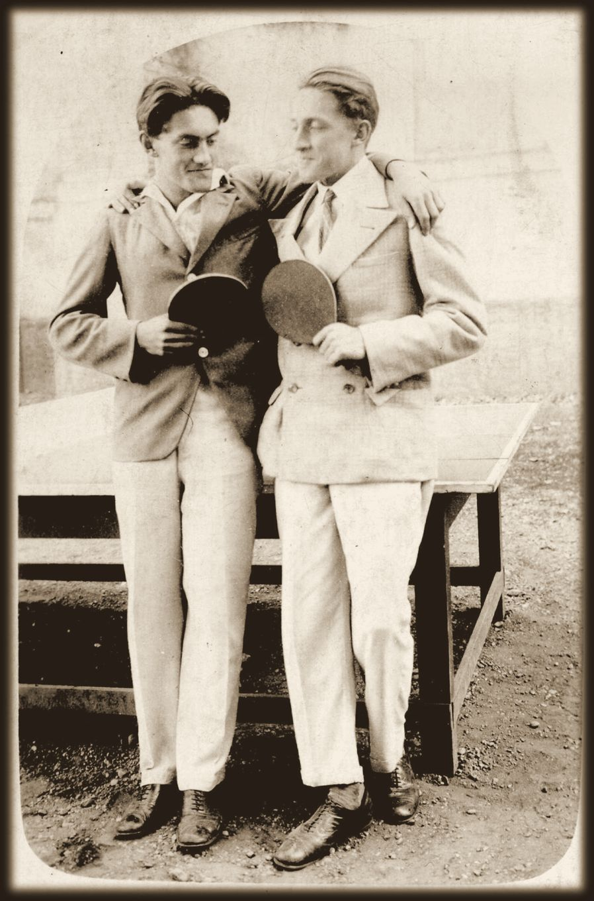
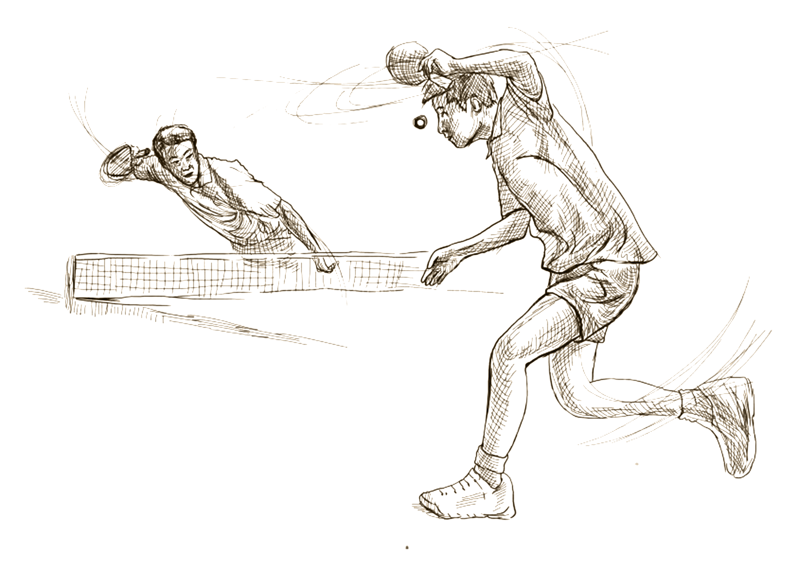

Monografija
Janez Nemec, prvi državni prvak v namiznem tenisu
- Avtorja
- Miran Kondrič in Jože Nemec
- Izid
- Radenci, 2025
- Obseg
- 308 strani, s fotografijami in časopisnimi viri
- Ogledi
Maja 1930 je v Murski Soboti potekalo prvo državno prvenstvo v namiznem tenisu. Posamično ga je dobil Janez Nemec (1912–2001), igralec domačega Športnega kluba Mura.
Knjiga je prvo delo, ki v celoti predstavi njegovo življenje in z njim razvoj namiznega tenisa v Prekmurju, sto let po prvi omembi te igre ob Muri. Časopisni zapisi so namenoma ohranjeni v izvirnem jeziku in pravopisu.

Vsebina
Kliknite poglavje in knjiga se odpre na pravi strani.
Preberite knjigo
Obračajte s klikom na rob strani, s puščicami ali z vlečenjem vogala.